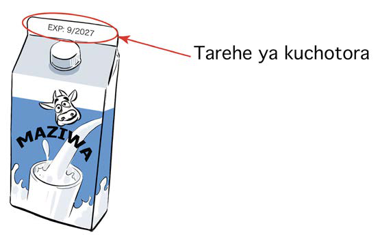

muda wa bidhaa kuchotora, namna ya matumizi, viambata vilivyotumika kutengeneza bidhaa na namna ya kuhifadhi.
Muda wa bidhaa kuchotora
Ni muda ambao bidhaa husika inakwisha muda wake wa matumizi. Bidhaa iliyochotora haifai kwa matumizi kwa sababu huweza kuathiri afya. Muda wa kuchotora kwa bidhaa huandikwa kwenye bidhaa kwa namna mbalimbali kati ya zifuatazo. Tarehe ya kuchotora kwa lugha ya kiingereza huandikwa “Expiry date” au kwa kifupi “ED, EXP au E.”. Hii inaonesha muda wa kumalizika matumizi ya bidhaa husika. Hivyo, hutakiwi kutumia baada ya muda huo. Kielelezo namba 17 kinaonesha au kinabainisha mfano wa taarifa ya kuchotora kwa bidhaa.

Maelezo ya picha: Pakiti ya maziwa inaonesha tarehe ya kuisha muda wa matumizi, EXP: 9 au 2027, juu ya kifungashio.Kielelezo namba 17 kinaonesha au kinabainisha mfano wa taarifa ya kuchotora kwa bidhaa.
Namna ya matumizi ya vitu
Kusoma na kuelewa maelekezo ya matumizi ya bidhaa kabla ya kuanza kuitumia ni jambo la kuzingatia. Hii itasaidia uweze kuitumia kwa usahihi na kulinda afya. Kwa mfano, bidhaa kama vile dawa za kutibu magonjwa mbalimbali zinatakiwa kutumiwa kwa kiwango sahihi ili kuepuka madhara ya kiafya. Kielelezo namba 18 kinaonesha au kinabainisha mfano wa maelezo ya kutumia dawa.